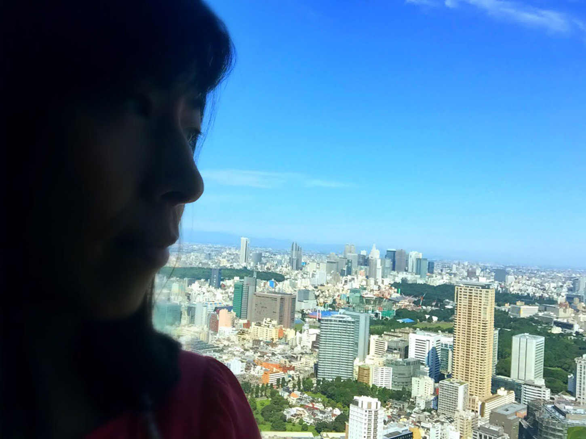

| 金持ちパパと貧乏パパ、どちらになりたいですか？ 〜家族を幸せにする不動産投資で不労所得を作る秘密〜 | |
| 白水敬子 | |
| Hitotsuku Publication (2018) | |
白水敬子
私は、現在不動産を３棟所有している家賃収入が月収１３０万円の不動産投資家です。不動産投資コミュニティで講師も務めさせていただいています。
女性の私が年収１０００万円オーバーの不動産投資家と聞くと多くの方が「才能に恵まれている上に強運の持ち主なのね」とか、「投資関係の能力が非常に高い」などとおっしゃいます。
確かに、不動産投資家として成功している方の中にはそのような方もいらっしゃるでしょう。けど、私は違います。
私はどこにでもいる普通の女性で、投資とは無縁の生活をしていました。むしろ、病弱だった過去を考えれば普通の人よりも「要領が悪くて、何をしても時間がかかるタイプ」。敏腕不動産投資家や「やり手女社長」のようなイメージとは真逆の存在です。
そんな私でも、不動産投資に出会ったことで人生が１８０度変わって、前向きに仕事に取り組み、お金と時間に縛られないゆとりある暮らしを送れるようになりました
。
今では、海外生活を検討するほど安定した収入がありますし、時間にゆとりがあります
。私はこの立場になって、考えました。
「この投資法は子育て世代の男性こそやるべきなのでは？」と。
子供や家族の将来のために頑張っている世の中のパパたちこそ、不動産投資をスタートして、暮らしと将来にゆとりを持つべきだと思います。
自分の父親や、周りにいる子育て世代の友人知人を見ていると、みんな家族のために頑張っているのに、時間に追われ、子供や家族と向き合うゆとりがありません。そんな方が不動産投資を始めれば、家族との豊かな時間を取り戻せる上に、将来のお金の心配もほぼ消えてなくなります。
もちろん、不動産投資だってリスクゼロではありませんが、私が実践している方法なら他の投資法よりもはるかに低リスクで、高いリターンを得ることができるのです。
この本を手に取った、頑張る男性が人生を自分の手に取り戻すためのお手伝いができればと、私の経験や、私が成功した手段をお話ししますので、ぜひ最後まで読み進めてくださいね。
私は子供の頃から病弱でした。すぐに熱を出したり、腹痛を起こしたりして学校は休みがち。小学校の時から、学校の授業についていけないという有様です。
同じクラスのみんなは、何の苦労もなくわかることでも私にとっては、難問。
だから私の子供時代は決して、優秀ではありませんでした。常に体調の変化に振り回されて、楽しい思い出はそんなにありません。中学生になったらもっと、勉強は難しくなります。病弱で授業を休みがちな私はついていくだけで精一杯でした。
それでも、親や先生の期待に沿うべく、必死に勉強して「進学校」と呼ばれる高校に合格しました。
ここまで、読んだら「なんだ敬子さんは優秀なお子さんだったのね」と思われるでしょう。けど、違います。
私は、要領も悪いし、病弱だからみんなが楽しんでいる間、ずっと一人で勉強に打ち込みました。もともと頭が良い人ならこんなことしなくてもよかったはずです。
けど、私は普通の頭でしたし、体も弱いのでみんなが青春を謳歌している間、重たい体を抱えながらコツコツ勉強していただけなのです。もちろん高校の授業についていくのも大変です。
もっと大変だったのは、大学受験。度重なる発熱や腹痛と戦いながら、必死に勉強しました。そのかいあって、なんとか志望校に合格。
大学に進学したら、環境が変わったせいか体調はもっと悪くなりました。それでも、必死に講義に出て、必死にレポートを書いて、時間をかけて勉強をして「薬剤師」の資格を取りました。
母が私に「敬子は病弱だから管理栄養士、看護師、薬剤師みたいな国家資格で就職先に困らないものを取ったほうがいいよ」と昔からアドバイスしてくれていたので、子供の頃からその方向に進めるように努力していたのです。
私にとって、薬剤師の資格は、物心ついてからずっと戦い続けた病弱な体に打ち勝った証でした。周りの友達が、遊んだりデートしたりしている時、ずっと勉強をし続けた私の勲章です。
「薬剤師になれるんだったらすごいじゃない」
そう思っている方が多いでしょう。けど、実際に働き出したら私の思い描いていた「働き方」とは程遠いものでした。病弱体質は大人になっても治らないどころか、働き出してからは悪化してしまったのです。
入院こそしませんでしたが、毎日ほぼ寝たきりの状態です。学生時代の友達が就職して、飲み会や海外旅行を楽しんでいるとき、私は実家の薄暗い自分の部屋に横たわっていたのです。
「私、何やってるんだろ」
そんな虚しい気持ちに何度も襲われました。子供時代も青春時代もほとんど楽しめずに必死に取った資格なのに、結局自宅のベッドで寝ているだけ。
１人でぐるぐる考えていると、頭がおかしくなりそうだったので少しでも社会と繋がっていたくて、パートで薬剤師の仕事をすることに決めました。毎日は無理でも週に数日ならなんとか働けるかもって。
実際に働き出したら、社会と繋がってるだけで心が満たされたのか、少し体は楽になりましたがそれでも決められた曜日に出勤するのが大変でした。パートとして始めた仕事でしたが、なんとか出勤を続けて正社員に登用されました。
喜ばしいことですが、私の心は不安でいっぱいです。
「こんな生活がいつまで続くんだろう。私は一生こうやっているのかな。もっと体調が悪くなったら私は生きていけないのかな」
「今は親が元気だからいいけど、私が体調悪化して、親も病気になったらこの先どうなっちゃうんだろう」
そんなネガティブなことばかりが頭を駆け巡ります。
私が不動産投資に出会うまでは、「マイナス思考」に取り憑かれていたの？ というくらい落ち込んでいましたし、体調も不安定でした。けど、知人から「不動産投資」の話を聞いて、私の目の前がパッと明るくなったのです。
「不動産投資で成功すれば、会社に行けなくてもお金が入る」
そのフレーズが頭の中でこだまして、私のスイッチが突然オンになりました。体調と相談しながら、恐る恐る生活する苦しみから解放されるかもしれないという期待で、私の心は踊りました。私のやる気スイッチはここだったんだ、と。
「いい物件さえあれば、将来の不安がほぼなくなる！」
そう思い立った私は、不動産関係の本を15
冊ほど読み漁り、インターネットで情報を集めました。どうやったら、私が先人たちのように不動産投資で成功できるのかを知るためです。
そして、私は「優良な物件を買うことが成功への近道」という結論にたどり着きました
。アパートやマンションを買って、家賃収入をゲットするのです。融資さえ通れば１棟買うのが理想的です。幸いなことに、私は「正社員の薬剤師」という肩書きがあったので、銀行融資の点に不安はありませんでした。
けど、そこからが本当の戦いでした。私の地元、福岡だけじゃなくて熊本や横浜にも足を運んでアパートやビルを探しました。インターネットや不動産屋さんで、投資用の物件を探します。
ところが、いくらインターネットで探してもピンとくる物件がありませんでした。写真で見たらいい感じだったのに、実際にみると塗装が禿げていたり、エレベーター付き物件でランニングコストがかかりすぎたり、と短所だらけの物件ばかりなのです。
不動産屋さんに行っても同じです。入居者さんが入りづらそうな悪立地の物件や、メンテナンスが行き届いていないボロボロ物件ばかりを紹介されてしまいます。
今考えれば、当たり前のこと。
不動産業界は、サラリーマン不動産投資家に厳しい世界です。一見さんに優良物件を紹介してくれるはずはありません。本物の優良物件は、私みたいな初心者不動産投資家の元には転がり込んでこない
のです。
収益率が高い優良物件は、ほとんどが業者ないの「内輪」でやりとりされます。私が必死に探しても、優良物件なんて出てくるはずがないのです。
「不動産投資なんてやっぱり、私にはできないんだ......」
良い物件が見つからないと途方にくれている私は、折れそうな心を奮い立たせて、自分を鼓舞しました。
「ここで諦めちゃダメだ。成功している人がいるなら私だってできるはず、頑張れ敬子」
これまで、私は病気を抱えながらも、みんなと同じようになりたいという一心で頑張ってこれました。だから、「今回だって頑張れるはず」、と自分に言い聞かせたのです。
あとから考えれば、一人でもがき苦しまなくても、簡単に不動産投資に取り組める方法があったのに、それを知らずに必死になっていました
。
そこから、１棟目を買うまでは本当に目まぐるしかったです。あちこちに移動して、物件を見て、良い物件になかなか巡り会えなくて、ゼロからやり直しで、という感じで本当に試行錯誤でした。
それでも私の粘り勝ちだったのか、ようやく運命の１棟目に巡り会えました。そこから、融資に必要な書類の用意、手続き、登記、など本当に目が回るような忙しさ。病気を抱えて、仕事をしながらこなすのは本当に大変で、弱気になることもありましたが、「これで将来の不安が少し消える」という思いでなんとか乗り切れました。
１棟目が自分のものになった時の達成感は、今でも忘れられません。不動産を持つ前のような「漠然とした不安」がなくなったのか、体に活力がみなぎってきました。そして、あんなに私を苦しめた病弱体質が徐々に消えて行ったのです。
不動産投資が病気を治したなんて怪しげなことは言いたくありませんが、未来への不安がなくなったことで、私の体の免疫力がアップしたのかな、と思います。
将来や体調の不安、お金に対する心配がふわっとなくなって心がすっきりと青空のように晴れ渡りました。１棟目を手に入れたときの、達成感、充実感、心の高鳴り、そして安心、は一生忘れないことでしょう。
そこからは、仕事にも張り合いが出てきて前向きに働き、いつの間にか投資用物件も２棟、３棟と増えて行きました。
不動産投資を始めて、１年が経過したとき、私は３棟を所有する立派な不動産投資家になっていました。
年間の家賃収入は１５６０万円。薬剤師としての年収の２倍以上です。その状態がしばらく続いたとき、私は「サラリーマン薬剤師」を卒業することを考えていました。
生活するのに困らないお金と安定した将来を手に入れた今、「体調が悪くなったら働けなくなるかもしれない重圧」に悩まされながら、毎日会社に行く必要はない
と考えたからです。
私は病弱な体と戦ってばかりの人生でした。コツコツと頑張ったおかげで薬剤師の資格も取れました。けど、小学生の頃から社会人になってもずっと私の頭の中から離れなかったのは「体調が悪くなったらどうしよう」という不安と重圧です。
子供の頃は「学校に行かなきゃ」という義務感。大人になってからは「働かなければお金が稼げない」という重圧。
けど、不動産投資を始めて月間の家賃収入が１３０万円になった時、「もう私はお金を稼がなきゃっていう重圧から解放されていいんだ」と今までに感じたことがない安心が私を包み込みました。
１棟目のアパートを手に入れた時は、心がふっと軽くなりました。２棟目を手に入れた時は心にゆとりが生まれました。そして、３棟目が自分のものになった時「私はもうこれで自由になれる」と思えたのです。
「不動産収入で生活する」と聞くと眉をひそめる方も多いでしょう。けど、私はどうやって稼いでもお金はお金だと思います
。
毎日会社に行って働いたお金も、不動産投資で稼いだお金も「同じお金」です。どちらが尊いというものではありません。それよりも、人生の時間をどう使うのかが大切。
働くよりも、大切な家族とゆったりとした時間を持つことの方があなたにとって「豊かな暮らし方」だと思うのです。自分のため、家族のために限られた人生の時間を使いたいですよね。
そうやって「サラリーマンからの卒業」を本気で考え始めると同時に、私の中には「もっと物件が欲しい」という欲求も、むくむくを頭をもたげてきました。
薬剤師を辞めても生活ができる目処がついたら、今度は「薬剤師を辞めずに働いたらもっと物件を買えるのでは？」と思ったのです。すると、いつもよりも前向きに、積極的に仕事に取り組めるようになり、気づけば昇進していました。
結局今も、薬剤師を続けながら不動産経営をしています。将来への不安から解放された私は、これまでの人生で一番輝いていると思います。
「敬子さんだからそこにたどり着けたのでは？」と思いますか？
確かに、私は子供時代、青春時代、そして社会人時代も病弱な体と一緒にコツコツ頑張ってきました。人並み以上に努力しましたし、時間もたくさん使いました。けど、そうやってつかんだ仕事も、私にとっては「人生のゆとり」をもたらすものではありませんでした。
いまの私があるのは「不動産投資」のおかげです。不動産投資のおかげで、ようやく自分の人生を取り戻して、時の流れを楽しめるようになりました。もちろん、不動産投資をできるようになったのは、仕事をしていたからです。これまでの人生だって無駄ではありませんでした。
けど、不動産投資に出会わないまま薬剤師を続けていたら、いまでも実家の布団にくるまって、見慣れた天井を眺め続ける日々を送っていたかもしれません。有給をとって暖かい南の島の太陽を浴びて、ビーチで小説を読みながら過ごすなんて、夢のまた夢だったでしょう。
だから大きな声で、世の中の頑張るお父さんたちに言いたいんです。
「ワンコインランチを食べて、家族のために毎日働いているお父さんなら、私よりも絶対に不動産投資に向いているし、成功できる」
と。
こんなに不器用に人生を歩んできた私が、一発大逆転できたのは、不動産投資のおかげです。ぜひ、一家の将来を支える重圧に耐えて頑張っているお父さんたちも不動産投資に興味を持って、「お金がお金を呼んでくる」好循環に身を置いてもらいたい
と思います。
サラリーマンとして、10
年以上勤め上げているあなたなら、不動産投資がメリットだらけの「夢のような投資法」ではないことをご存知だと思います。確かに、不動産投資で身を滅ぼす人は、大昔から存在します。
今でも多くの不動産オーナーが自己破産をしたり、ローンを返済できずに物件を売却したりしています。「土地転がしに失敗して大借金を背負った芸能人」は両手で数えられないほどいますよね。
そもそも、物件を購入する前に「地面師」による詐欺に引っかかってしまう人もいます。２０１７年８月に、不動産投資のプロである大企業が、地面師と呼ばれる詐欺師に騙されて63
億円という大金を失った事件を耳にした方も多いでしょう。
プロですら騙される業界ですから、私たち素人が太刀打ちできるわけがない、と思うのは当たり前のこと。
しかし、不動産投資と不動産業界について正しい知識を頭に入れて、プロ並みの情報力さえ手に入れれば、私たち素人も企業不動産戦士や、不動産屋さんに匹敵するほどの物件を購入できます
。
不動産投資を成功させるコツは、空室率が低い低リスク優良物件を購入すること、だけです。だから、優良物件さえ手に入れることができれば、不動産投資はあなたが考えるような危険な存在ではなく、株式投資や為替取引、仮想通貨取引よりもよっぽどか安定して確実な投資法に様変わりします。
あなたの同僚でも株式投資や仮想通貨売買で資産を増やそうとしている方がいると思います。投資で資産を増やそうとする姿勢はあなたと同じで、素晴らしいですよね。
お金をお金のまま放置していたら、お金は増えませんし、インフレになれば価値が下がってしまいます
。
けど彼らとあなたには決定的な違いがあります。それは「心と収入の安定」です。
株や為替、仮想通貨は資産が10
倍になることも、決して珍しくありません。アベノミクス相場や２０１７年の仮想通貨大暴騰では、多くの「億り人（おくりびと）」が誕生しました。テレビやインターネットで、彼らの「総資産額」をみて、口をあんぐりとあげた方も多いと思います。
けど、成功している人はごくほんの一握り。上昇相場の後に待っている暴落相場では、資産が半分になることは日常茶飯事です。実際に、あんなに上昇していたビットコインは２４０万円から１００万円以下に下落して、「去年の分の税金が支払えない」と青ざめているトレーダーが無数に存在します。
株取引をしている個人投資家の９割が損失を出して、１年程度で取引をやめているというデータもあります。残りの１割のトレーダーは、勝っているものの毎日神経をすり減らしながら、売買して、自分の時間を割いて銘柄や企業について勉強しています。
そんなに努力をしているのに、世界的な株安や紛争などが起こればあっという間に資産は激減。だから毎日心が落ち着くことはありません。株なら夜間の海外の取引が気になりますし、為替は夜が本番。仮想通貨は24
時間取引されています。
これでは本業にも身が入りませんし、家族との時間は少なくなるし、本末転倒ですよね。不動産投資以外のほとんどの投資は「努力」と「技術」と「運」が必要な厳しい世界なのです。
けど、不動産投資なら、優良物件させ購入できれば「何もしなくても」一定の収入が入り続けます
。
腕も、運も、勉強もいりません
。
その証拠に、不動産投資については本で得た知識、自分で不動産屋さんを回った程度の経験しかない私でも、年間の家賃収入１５６０万円を達成できています。私のことを信じるのどうかは、あなた次第です。私が伝えたいのはただ１つ。
「私もできるからあなたも絶対できます」
不動産投資を世の中のパパさんに強くすすめる大きな理由の１つが「不動産投資は学資保険の代わりになるから」です。不動産投資は、優良物件を所有している期間は安定した収入をもたらします。だから、教育費がどんどんと増える中学生以降の家計が厳しい時期もギスギスすることなく乗り越えられます。
「子どもの教育費なら学資保険があるから大丈夫」と思っている方も多いですよね。確かに、学資保険は、毎月のお給料から一定額を自動で積み立ててくれる優秀な金融商品です。
けど、積み立てているお金はあなたのお給料。毎月２万円積み立てれば、２万円使えるお金が減るということです。
学資保険を積立ながら、日々の塾代や習い事代、部活費用などを捻出しなければなりません。毎月の限られたお給料の中で、やりくりして、教育費用を支払いながら貯金をし続けるのはとても大変。
そして、毎月２万円を、一生懸命18
年間貯め続けても子供が大学に入学する18
歳の時点で貯まった金額はたったの、４３２万円。もちろん満期が来るまで使えません。生命保険付きの学資保険の場合は、積み立てた金額よりも受け取り金額が少なくなってしまいます。
大学の入学金や授業料、仕送りや家賃などを考えると１年から２年で消えてしまう金額です。我慢して18
年間貯め続けたものがたった数年で、０円になります。もちろん、そのおかげで子供は無事に大卒の資格を手にして、就職していくことでしょう。ごくごく常識的な方法です。
しかし、不動産投資は違います。投資用物件を全額ローンで買えば、家賃収入からローン返済を差し引いても手元にまとまった金額が残ります。それを貯めていけば「自分のお金は一切減らない」のに、学資保険とは比べ物にならない金額の「教育資金」が貯まる
のです。
毎月20
万円の収入が入ってくる物件を持っている場合、年間に２４０万円、10
年間で２４００万円もの教育資金がたまりますよね。いまのお給料にこれだけの金額がプラスされたら生活がどう変わるのか、将来設計がどんなに楽になるのかは、賢明なあなたならすぐにわかるはずです。
不動産投資をせずに学資保険を積み立てて「入学金と授業料の足し」にするのか、それとも不動産投資で、毎月20
万円を手に入れて大学進学費用だけでなく進学するための塾代や予備校代まで手に入れるのか、考えなくても結論は出ていると思います。
こちらは某保険会社が販売している18
年満期の学資保険の毎月の支払い額と受け取り総額です。
「毎月の保険料 １３８９３円 支払い総額 ３００万８８８円 受取金額 ３００万円」
毎月厳しい家計の中で18
年間保険料を支払い続けたのに、支払い総額よりも、受取金額が少ないですね。これでは単なる「貯金以下」です。
子供と家族のために「より多くの選択肢」を残してあげられるのは学資保険ではなく不動産投資ということがわかっていただけたと思います。
私は、親に薬学部に入学させてもらいました。理系の大学は文系大学よりもお金がかかります。私立大ならなおさらです。今でも大学を卒業させてもらったことを親に感謝しています。
これは、日本の大学進学に必要な費用のデータです。見ての通り、大学４年間でこんなにお金がかかります。一番お金がかからないと言われている自宅通学の国立大学でも５２３万円も必要
なのです。
国立大学に進学して１人暮らしをする場合......８１４万円
文系私立大学に進学して１人暮らしをする場合......９５３万円
理系私立大学に進学して１人暮らしをする場合......１０８８万円
国立大学に進学して自宅から通う場合......５２３万円
文系私立大学に進学して自宅から通う場合......６８３万円
理系私立大学に進学して自宅から通う場合......８１８万円
大学進学費用も大変ですが、そこに至るまでにも大きなお金が必要です。こちらのデータは１年間に必要な「教育費」です。
公立小学校 １年間に平均32
万円
公立中学校 １年間に平均48
万円
公立高校 １年間に平均41
万円
単純にこれを足すと、教育費だけで４５９万円です。ちょっとお父さんの負担が多すぎますよね。
日本は世界でも教育費が高いと言われています平均的なサラリーマン家庭では、子供が大学進学すると貯金が底をつくどころか「奨学金」や「教育ローン」などの、借金に頼らなければ生活できないのです。
毎日必死に働いて、なおかつ借金まで背負って子供達により良い教育を受けさせてあげるお父さんたちを心から尊敬するとともに、自分の両親に感謝します。
けど、これでいいんでしょうか？ 私は、パパさんたちは頑張りすぎていると思っています。パパさんの心情は、私が体調不良でまともに働けなかった時、働き出しても「いつまたダメになるかわからない」という不安と戦っている時とダブるのです。
「石にかじりついてでも仕事を続けなければ家族が路頭に迷う」
「僕が倒れたらどうしよう。家族はこの先どうなってしまうんだろう」
こんな不安や重圧に押しつぶされそうになる瞬間があるのではないでしょうか？ 私は毎日、重たい体を抱えながら、必死にその不安と戦っていました。
独り身の私があんなに不安だったんだから、家族を支えるお父さんの抱える重荷は計り知れない
と思います。
「パパは必死に働くべき」
「男親は働く背中を見せるべき」
そんな固定概念は捨てませんか？
私は要領が悪くて、普通の頭の持ち主でした。それでも不動産投資で、未来への不安を拭い去り、重圧に心を縛られる暮らしから解放されました。
この生活は、私みたいな独身女性だけでなく、子供と家族のために頑張るパパこそ手に入れるべき生活です。もちろん、すぐに脱サラしたほうがいいなんていいません。
けど、不動産収入という心のゆとりを手に入れることによって、あなたと家族の暮らしは大きく変わり、前進します。あなたと家族にとって、お金のことで悩み続ける時間ははっきり言って無駄な時間だと思います。もっと、心をざわつかせるのが、将来の不安。
この２つの不安を解消するために、不動産投資を検討してください。昔の私のように、将来の不安や、お金の不安に毎日追いかけられているパパこそ、不動産投資で心と体を解放して欲しい
のです。
不動産投資にも、いろいろな種類がありますが私が頑張るお父さんたちに勧めたいのはアパートなどの賃貸物件の購入です。良い物件を購入しさえすれば仕事が忙しいあなたでも、心を煩わせることなく、安定した収入が入ります。
私の話を聞いて、不動産投資で私が成功できたノウハウを知りたいなと思ったら、次の章で具体的な方法を説明しますので、ぜひぜひ読んでくださいね。

不動産投資を始めるときに、誰しも真っ先に思いつくデメリットが「資金問題」です。多額の預貯金がなければ不動産投資はできないと思っている方が多いでしょう。私も調べるまではそう思っていました。
「不動産投資はお金持ちがやることでしょ」
「まとまった家賃収入が入る物件は高くて私みたいな庶民には買えないでしょ」
けど、実際には不動産投資をスタートするのにお金は１円も必要ありません
。なぜならば、毎日働いているあなたには「会社員」という最強の肩書きがあるからです。会社員の肩書きさえあれば、不動産は「全額ローン」で購入できます。
物件を買うときに必要な諸費用すらローンで支払えば、あなたが負担するお金は０円。物件を見に行く時の交通費くらいは自己負担になりますが、そのレベルです。
つまり、資金問題はあなたが会社員という時点でほぼクリアできるのです。不動産投資ローンを銀行が審査する時、チェックするのは物件の良し悪しだけではなく、借りる人、つまりあなたが「ローンを返済する能力があるか」です。
銀行のローン審査で一番重要なのは「安定した収入があること」
です。だから、年収５００万円の会社員と、年収７００万円の会社経営者では断然、会社員の方が借りやすくなります
。
一部上場企業の会社員や公務員の場合は、もう少し年収が低くても「都内のアパートが１棟買える」ほどのローンを組むことも可能です。
実生活では、「ベンチャー社長」や「若手起業家」など華々しい経歴の持ち主たちを尻目に「いいなあ」って思うこともあるかもしれませんが、不動産投資の世界ではあなたのように頑張って働いてきたお父さんの方が「有利」なんです。
これで、あなたの頭に真っ先に浮かんだ疑問はキレイに解消できましたね！
ここまで、読んで「敬子さんはやっぱり不動産投資のプロだ」と思いましたか？ 実は私はまだまだ駆け出しで、ここからもっと展開していきたいと思っています。あなたよりもよっぽどか世間知らずですし、能力もありません。そんな私でも、たった１年でここまでこれるのが「不動産パワー」です。
サラリーマン投資家として、資金面の問題がクリアできたら次にのしかかるのが「情報力不足」です。不動産投資は情報が命。優良物件を持っていれば寝ていても収入が入り続けますが、不良物件を買ってしまえばローン返済どころか、追加でお金が必要になることも珍しくありません
。
メンテナンス不足の物件を買うと、「水回りの故障」、「外壁塗装」、「屋上防水」、「耐震補強」など次から次へと修繕を迫られて、いつの間にか物件と同額の修繕ローンを組んでいたという悲劇が起き兼ねません。しかも、その物件が空室だらけだったら？ あっという間に大貧乏生活です。
これを回避するためには、優良物件情報が必要不可欠ですが、サラリーマン投資家のもとには優良物件情報は届きません。不動産屋さんに「投資用物件を探しているんですが」と問い合わせたら、待ってましたと言わんばかりに「売れ残り物件」を押し付けられます。
実は私も自己流で物件を探している時、売れ残り物件なのに「ほかにも買い手がいるから急いだほうがいいよ」と猛プッシュされたことがあります。まだ何も知らなかった私は急いで、銀行融資の手続きを進めようとしました。
「早く買わないと誰かに買われる！ 私のアパートが取られちゃう！」ってすごく焦って、融資が早く降りるように、掛け合ったほど。結局融資が下りずに買いませんでしたが、今思えば完璧な売れ残り物件。
あのまま持っていたらと思うとゾッとします。こうやって不動産収入でゆとりある暮らしを送れている私だって自己流では大失敗をするところでした。最近その物件を調べたら、今だに買い手がつかずに売りに出ていて、苦笑いです。
この本をここまで読んだあなたはとってもラッキーです。なぜならば、私や私の仲間達が、あなたに優良不動産情報を教えてあげられるから
。
私は、自力で不動産投資をスタートして、本当に苦労しました。そして、３棟所有した後も、「孤独」に苦しみました。私は薬剤師です。不動産投資をやっている同僚も知人もいません。
もっと、不動産について話したい、話を聞きたいと思っていました。そこで私は情報収集にはげんで、今所属しているコミュニティを見つけました。
そこには、私を凌駕する経歴の持ち主、物件の所有数を誇る先輩が多数在籍していて、私が喉から手が出るほど欲しかった経験や情報がゴロゴロ転がっていました
。
「この存在を最初に知っていればあんなに苦労しなかったのに......！」
と、絶句してしまったほどです。
不動産屋さんでは見たことがないような、好条件の物件の情報が入ってきますので、情報量でプロに負けることはありません
。
この情報さえ手に入れられれば、あなたの不動産投資ライフはほぼ成功したも同然です。何も知らなかった私よりも、この本で知識を身につけたあなたの方がむしろ有利なほど。ローンに通りやすい会社員という肩書きに、プロ以上の情報力が手に入れば、あなたは最強の不動産投資家に変身できます。
「なんで、不動産屋や業者しか知らないような優良物件情報がそのコミュニティに流れてくるの？」と疑問に思ったあなたは、かなり鋭いですね。
一個人では絶対に入手できない情報が流してもらえる理由は「コミュニティに購買力があるから」
です。私が所属しているコミュニティには、すでに不動産を所有しているメンバーが在籍しています。
不動産を所有しているということは「収益を上げていればさらに不動産を買える」ということです。つまり、私たちのコミュニティに情報を流せばスムーズに、迅速に物件が売れます。
だから、プロ中のプロのような仲介業者が私たちに情報を教えてくれるのです。
コミュニティに紹介される物件はどれも優良物件ばかり。かといって、それを片っ端から買えばいいかというと、そうでもありません。いくら物件が優秀でも、物件価格があなたの収入に見合わなければ、融資が通りませんし、全てが完璧な物件もありません。
そんな時、手を差し伸べてくれるのがコミュニティの先輩たちです。コミュニティには先輩不動産投資家が所属していて、中には５棟、総資産５億円というスーパー投資家も。
彼らは不動産情報網だけでなく、それを選びぬく確かな目を持っています。
「この物件は、立地はいいけど空室率が高いから何か悪材料があるかもしれない」
「この利回りだとローン返済で半分が消えてしまうからやめた方がいい」
など、プロ顔負けのアドバイスをしてくれます。
あなたは１年前の私と同じように初心者不動産投資家ですが、コミュニティの先輩たちは歴戦の勇者です。彼らの知恵を借りれば、私たちでも「スーパー投資家」と同じ考え方で、有力物件を買える
ということ。
また、物件の収益力だけじゃなくて、物件自体の耐朽性などを判断できるメンバーもいます。中古物件を購入することが多い私たち個人投資家にとって、物件の耐朽性はとっても大切。
中古物件を購入するときは、築年数だけでなく構造やメンテナンス履歴、塗装や防水工事などの状況も把握しなければなりません。鉄筋コンクリート物件の場合、外壁の塗装を定期的に行わなければ、コンクリートが腐食して劣化が早まってしまいます。
屋上の防水工事をしっかりしておかないと、雨漏りが発生します。だから塗装や防水工事は定期的に行うメンテナンスが必要ですが、物件によっては築年数が浅いのにメンテナンス不足のために、想定以上にお金がかかってしまうことがあるのです。
そんな物件を掴んでしまったら、物件本体のローンだけでなくメンテナンス費用もかさんでしまって、利益が少なくなってしまします。
こればっかりは、第三者の専門家に診断をしてもらわなければ私たち建築素人には判断ができません。
しかし、コミュニティには、建築関係に詳しい人も在籍していますので、物件の状態についても、的確なアドバイスをしてもらえます。
様々なスキルを持った個人が集合した専門家集団なので、下手な不動産屋さんや業者さんよりも情報の量と質が優れている
のです。
物件を購入したら、次は面倒な「管理」が襲いかかってくると思うかもしれませんが、管理のノウハウやトラブルなどは、仲間と共有して解決して行くので、あなたが悩むことはありません。
物件を購入したら、あなたがまずやるべきことは「管理会社への委任」です。大家さんになったら、「物件管理や入居者さんから家賃の徴収業務をしなければならない」と考えていたかもしれませんが、今の時代大家さんは前面に出てこなくても大丈夫です。
ただでさえ忙しいサラリーマンのあなたに、不動産管理という重荷まで乗せてしまったら、不動産投資をスタートした意味がありません。
「買ったらあとは管理会社にお任せ」して、本物の不労所得を手にしてください
。管理会社は、家賃の徴収代行を始め、ありとあらゆる物件の管理を行います。
草抜き、ゴミ捨て、巡回、故障対応、など思いつく大家さんの仕事はほとんどやってくれますので、あなたは今まで通り会社に行ってお仕事をしていればいいのです。
それに、アパートに大家さんがしょっちゅう顔を出していたら「監視されているみたいで居心地が悪い」と思う入居者さんが多いので、管理会社に任せることは一石二鳥。
管理会社に任せておけば、私たちがやることはほとんどないのですが、突発的なトラブルが発生することがあります。そんな時は、仲間に投げかけることで、思いも寄らない解決法を提案してくれたり、一緒になって考えてくれるので１人で悩むことはありません。
私も何度仲間たちに助けられたことか(笑)。だから、不動産投資初心者さんでも安心して、スタートできますし、トラブルで困ることもありません。
ここまで読んで、「これなら僕でもできそうだ」と思いましたか？ そう思った方は次の章に不動産投資を始めると決意した方がやるべきことをまとめましたので、しっかり読んでくださいね。
あなたが、不動産投資をやると決意を固めたら、一番最初にやることは「仲間探し」です。第３章でお話ししたように、不動産投資を進める中で「仲間」はとっても大切。
不動産に関する知識と経験が豊富で、「成功している」仲間を手に入れるだけで、成功は半分以上約束されたようなもの
です。
不動産の情報やノウハウもさることながら、成功者と知り合って彼らから刺激を受けることは成功への近道だと思います。私は、不動産投資を始める前は、年収数千万円という人たちは「雲の上の存在」「テレビやインターネットの中の人」だと思っていました。
けど、不動産投資を始めて、コミュニティに仲間入りしてからは資産数億円の成功者は雲の上の存在ではなく「隣にいる仲間」です。彼らの言葉や行動を見聞きするだけで、自分の中の何かが刺激されて「いいなあ」「羨ましいなあ」っていう感情から「私もああなるんだ」っていうアグレッシブな自分に変わっていきました。
そして、私は苦労した経験を生かして、不動産投資コミュニティで講師として、皆さんに不動産投資のノウハウをレクチャーする立場になりました。私のように、１人で苦労する人を１人でも多く減らしたい、そして不動産投資によってゆとりある人生を手に入れて欲しいという思いで、私の経験をレクチャーしています
。
私が所属しているのは「レバリッチ」という不動産コミュニティです。総資産５億円の先輩、元建築関係の頼りになる仲間たち、など不動産投資の成功者たちがうじゃうじゃ在籍しています。
この本で何度もお話ししたように、私は不動産投資については本当に何も知らずに、始めた初心者でした。投資経験もゼロですしお金に関する知識だって一般的なことしか知りませんでした。
だから、私が不動産投資でゆとりを手に入れるまで、本当に苦労しました。けど、ここまで読んだ方なら、「仲間を手に入れること」で私が味わったような苦労をせずとも、良い物件に巡り会えることがわかっていただけたと思います。そして、そんなあなたなら、不動産投資が人生にどんなに素晴らしい影響を与えるのかは、もう理解できていると思います。
そして、不動産投資への一歩を踏み出すこともできるでしょう。その決断はいまかもしれないし、明日かも知れません。
決断を下したら、まずはレバリッチの門を叩いてください。私と一緒に頑張って、将来の安心と時間のゆとりを手に入れましょう！
不動産投資にはレバリッチのような「仲間」が必要とお話ししましたが、まだ「自分でできる」と考える方もいらっしゃると思います。私も１人で物件を探したので気持ちがよくわかります。
インターネットで検索すれば「投資用物件専門サイト」がずらりと並んで、「表面利回り12
％
」などと「すごく儲かりそう」なコメントが書かれた物件が無数に掲載されています。
「これは駅から近いから空室にならないかな」
「築年数が新しいから、きっと人気に違いない」
そう考えて、ワクワクしながら物件を探します。けど、そこに載っている物件は「残りカス」です。不動産業者はまずは自ら所有することを考え、次に「スムーズに売買できる仲間や知人」に売却することを考えます。
自分も欲しくなければ、仲間にいらないと言われた物件だけがインターネットに掲載されて一般の人たちの購入を誘うのです。
自己流でスタートしたら、ほぼそんな物件を買わされてしまいます。さらに、買った物件に修繕が必要だと言われて高額な修理見積もりとともに、不動産業者と仲良くしている建築会社や工務店を紹介されてしまいます
あっという間にあなたは不動産業界の鴨にされてしまって、不動産投資の夢は儚く消え残ったのは、空室だらけの残念物件とローンだけ、という悲劇が起こりかねません。
それを防ぐために大切なのは「人脈と知識」
。優良物件情報を教えてもらえる、人脈と投資や物件に関する知識が必要です。
この２つを持っていなければ、不動産投資は絶対に成功しないので、私の話を聞いて不動産投資に興味を持った方で、自己流でスタートしようとしている方はいますぐにやめてください
。
自己流不動産投資では、私がお話ししたゆとりある暮らしは手に入れられないどころか人生を破滅させる猛毒になってしまいます。
これから不動産投資をスタートするあなたは、人生の破滅ではなく、心とお金のゆとりを手に入れたくて始めるはず
。このことを忘れずに、冷静になって始動しましょう。
私は、不動産投資で私の人生でずっとかけていた「心の安定」を手に入れました
。それまでの人生で、私は常に「将来の不安」「働けなくなることへの恐怖」「焦り」に支配されていました。
「また体調が悪くなったらどうしよう」
「みんなは人生を楽しんでいるのに私は何をしてるんだろう」
こうやってネガティブなことばかりが頭に浮かび、毎日鬱々と暮らしていました。
けど、不動産投資に出会って、レバリッチの仲間になったことで私の生活だけでなく、内面も一変しました。
「体調が悪くなっても不動産収入があるからゆっくり静養しよう」
そうやって、自分に優しくなって将来のことを前向きに考えられるように。
もちろん、お金はたくさん稼げるようになったので、日々の暮らしでお金の心配をすることはほとんどありません。欲しいものはほとんど買えるし、食べたいもののお値段も気になりません。
ただ、お金が手に入って得られたのはそんな物質的なモノではなく、心の平安
。
将来のお金の不安、働き続けることへの重圧から解放されて、やっと本当の自分と向き合えるようになったと思います。
私よりも、抱えるものが多い日本のお父さんたちは、きっともっと多くのものを得られるでしょう。
「家族との時間」
「家族とあなたの豊かな暮らし」
「子供の将来の豊富な選択肢」
「お金に悩まない老後」
「何が何でも働き続けるという重圧からの解放」
いま、あなたが悩んでいることのほとんどから解き放たれるのではないでしょうか？
私と同じ、いえ、それ以上に人生の悩みを抱えているあなたなら、不動産投資で得られる心のゆとりと、豊かな生活は計り知れません
。
いま、将来に不安を抱えている方、仕事に悩んでいる方、そしてお金で悩んでいる方は「不動産投資」という人生の重荷を肩代わりしてくれる選択をしてください。
必要なのはお金でも、経験でも、ましても運でもありません。最初の一歩を踏み出す「勇気」だけです。
あなたよりも力がなくて、あなたよりも経験がない普通だった私でも、不動産投資で家賃収入１５６０万円を達成できました。
私と一緒に、「重圧だらけの人生」から「ゆとりある暮らし」に舵を切りましょう。
私の本を最後まで読んでいただいた読者の皆様、本当にありがとうございます。私が不動産投資をスタートして、人生が好転したときに真っ先に浮かんだのは、毎日通勤電車に揺られて、家族のために頑張っているお父さんたちの姿でした。
短いお休み、多くない報酬、成果が認められない組織。
欧米と比べると、決して恵まれているとは言えない労働環境で60
歳まで働き続けて、手元に残るのは暮らしていくのもままならない年金だけ、という頑張っているお父さんたちこそ、不動産投資で「ゆとり」を手にして欲しいと思ったのです。
日本のお父さんは、諸外国のお父さんよりも過酷な環境で、必死に頑張っています。だから、そろそろ重圧から解放されて、心と人生にゆとりを持ちませんか？
私は、心の底から「頑張るお父さん」たちが、お金と時間に縛られる暮らしから卒業することを願っています
。
この本を読んだ方が１人でも多く「ゆとりある人生」への第一歩を踏み出せますように。
最後に、私が敬愛するマザーテレサの言葉をご紹介します。この言葉を読んで、不動産投資で成功している自分の姿を想像して見てください。きっと、勇気ある決断ができるはずです。
「思考に気をつけなさい、それはいつか言葉になるから。言葉に気をつけなさい、それはいつか行動になるから。行動に気をつけなさい、それはいつか習慣になるから。習慣に気をつけなさい、それはいつか性格になるから。性格に気をつけなさい、それはいつか運命になるから」
頭の中で考えたことは、いつか運命になるんです。あなたも私と一緒に運命を変えましょう
。
タイトル 金持ちパパと貧乏パパ、どちらになりたいですか？ 〜家族を幸せにする不動産投資で不労所得を作る秘密〜
発行日 ２０１８年６月18
日
著 者 白水敬子
本書の全部あるいは一部をコピー、スキャン、デジタル化する無断複製は、著作権法上での例外である私的利用を除き禁じられています。本書を代行業者等の第三者に依頼してコピー、スキャンやデジタル化することは、たとえ個人や家庭内での利用であっても一切認められていません。
©２０１８ Keiko shiramizu